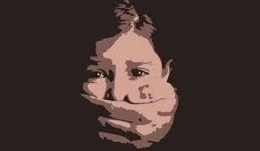
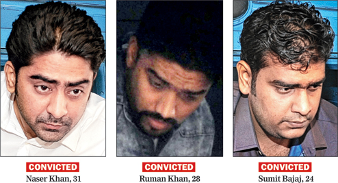

Justice dies in Darkness
Thursday December 4th, 2020
Edition: India| Regional
LAST UPDATE: DEC 4, 2020, 06:30 AM IST
Right from the time of her birth or even before a girl could become victim of a crime or target of a crime. There are various stages in women's life where she faces threat in all throught her life. According to National Crime Records Bureau 2019 report of India states a reported crime rate of 4,05,861 cases of crime against women, where in 2018 it was 3,78,236 crime cases, there is 7% rise in crime against women in a year of gap.
Stage 1: Foeticide and infanticide - Where there is an economic or cultural preference for sons, the pregnancy diagnostic tools can lead to female foeticide.
Stage 2: School going age - any Girls are not given the access to and completion of proper primary and secondary education as compared to boys and otherwise may also suffer from discrimination at the hands of parents and teachers in their upbringing.
Stage 3: Adolescence - Many adolescent girls become victims of sexual abuse both on internet and otherwise, exploitation and violence, acid attacks, rape ,early marriage, or even HIV/AIDS.
Stage 4: Marriage - Many women are tortured physically, economically and emotionally after their marriage by their husband and inlaws.
Stage 5: Motherhood - Women are sometimes not provided proper medical care and healthy food during and after her pregnancy .She is often compelled to abort a female foetus.
Stage 6: Workplace - often women suffer from exploitation , unequal pay for equal work , lack of promotions despite merit and physical, economic and emotional abuse.
The acts which are made to give protection to women against voilences:
On 14 September 2020, a 19-year-old Dalit woman was gang-raped in Hathras district, Uttar Pradesh, India, allegedly by four upper caste men.
After fighting for her life for two weeks, she died in a Delhi hospital.
The State government, Yogi Adityanath and district administration announced a compensation of ₹2.5 million (US$35,000)
to the victim's family and a junior assistant job for a family member.
Four accused persons:Sandip, Ramu, Lavkush and Ravi
For More Details:The 36-year-old epilepsy patient, who was gang-raped after being picked up in a car metres from the home she was staying at, has now lost her ailing mother to prolonged illness. The elderly woman, who had moved into a Panchasayar shelter home on October 30,2019.
 For more details:These above mentioned cases are only two but these crimes goes on each and every day in count of
thousands, every girl is getting punised for half-raw mistakes. Each and every women facing one or more crimes in each and every stage of her life.
When these activities come to end?
When girl get a freedom to be herself in the society?
when soceity look the girl child similar to a boy baby?
when these rapes get an end?
When will blindfold of justice get open to see the cry of innocent girls?
When will the government takes a strict action on life spoilers?
All these questions are roaming in mind of each and every women of the country. Government has set up some
acts to push womens in all field but due to family, cruel world, marriage all her rights are blindfolded.
I guess all these questions stay questions if girls don't question it. Yes, all of us
need to take part in getting Justice to girls. Every mother
has a love towards her family, every daughter has a love towards family, every sister has love towards her family, every
wife has a love towards her family, so Earth is a family we need to respect all womens feelings and to her life.
Each and every day every girl will be dipped in the sour of family and world lets all join our hands
to provide strength to the girl and say that she is not alone the whole world will try to protect every girls life rather than spoiling it.
Then our nation will stand proud. The Government is taking initiative to control violation on women but still it has failed to
stop these atrocities going on in country. These problems are not for this era but it was in exist from many years but still
none of us are ready to question it. It is this mindset that India and the world — sexual violence is rampant in
societies across the world — need to destroy to fight sexual violence. Putting the onus on women to prevent sexual violence
is not just absurd but dangerous.
Warning girls and women to not go out alone or to dress and behave in a culturally appropriate, male-mandated way
cannot prevent sexual violence. Rather, we need to din into boys and men (as well as women) that aggression is not
masculinity and being macho is not “cool.” It is only by tackling misogynistic mindsets among men and women and dismantling
the patriarchal aspects of the people to uphold that sexual violence can be tackle